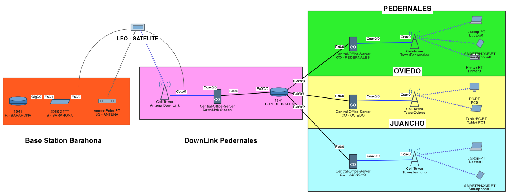
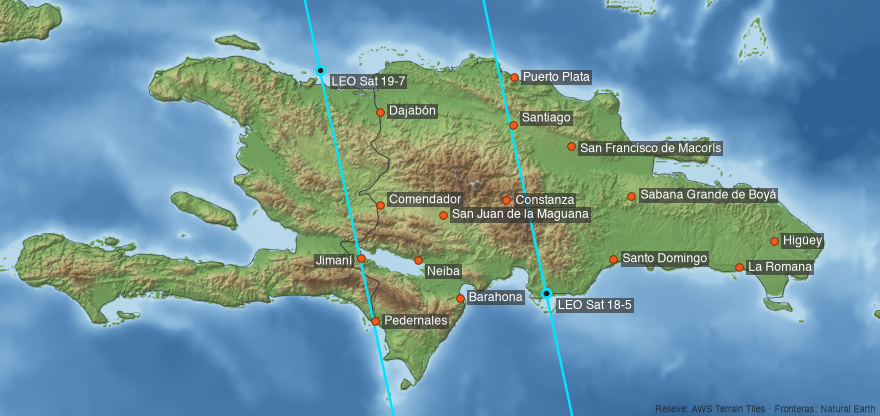
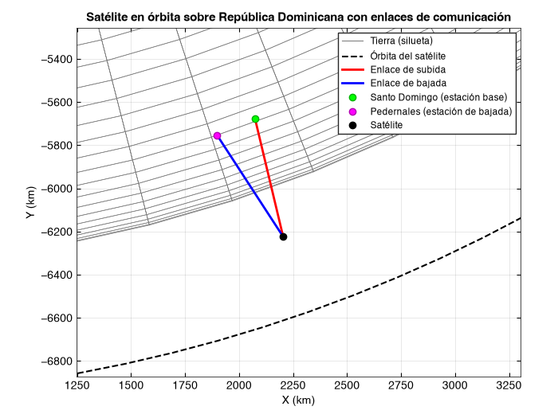

Un satélite solo pasa unos minutos
A 629 km de altura, un satélite da la vuelta a la Tierra en 97 minutos. Sobre la isla está apenas un rato, y el resto del día cada comunidad se queda sin señal.
Redes satelitales LEO / GEO · República Dominicana
LonxsLocate diseña y simula constelaciones de satélites para conectar las zonas rurales del país: la frontera, Bahoruco, Monte Plata y las montañas de Constanza.
Arrastra el globo para girarlo
18.7° N · 70.2° O
8 estaciones de subida en las ciudades · 7 comunidades rurales por conectar
El problema, paso a paso
A 629 km de altura, un satélite da la vuelta a la Tierra en 97 minutos. Sobre la isla está apenas un rato, y el resto del día cada comunidad se queda sin señal.
Si todas las órbitas arrancan al mismo tiempo, los satélites pasan juntos y luego desaparecen juntos. Hay huecos de hasta hora y media sin servicio.
Veinte planos con diez satélites cada uno y un desfase entre planos. Siempre hay dos o tres a la vista, pero es una constelación cara.
Subiendo la órbita, cada satélite cubre más terreno. El barrido de 90 diseños encontró que 8 planos de 8 satélites mantienen las 15 estaciones con servicio todo el día.
Barrido de 90 diseños
Probamos de 6 a 20 planos, de 4 a 12 satélites por plano y 3 altitudes, simulando 24 horas cada diseño. Nos quedamos con el más pequeño que mantiene a las 15 estaciones con servicio todo el tiempo.
El modelo mide visibilidad continua (al menos un satélite sobre 10° de elevación), no capacidad. Menos satélites también significa menos ancho de banda para repartir, y subir a 1 200 km agrega ~2 ms de latencia y ~5.6 dB de pérdida de trayecto. El siguiente paso del proyecto es el presupuesto de enlace completo.
Calculadora de enlace
Elige dónde sube la señal y dónde baja. El satélite se coloca sobre el punto medio entre las dos.
Universe Sandbox
Las primeras pruebas del modelo orbital: satélites GEO y LEO alrededor de la Tierra y luego dentro del sistema solar.
Del satélite al usuario
La estación base en Barahona sube la señal al satélite LEO. En Pedernales baja a una central que la reparte por antenas 3G/4G a Pedernales, Oviedo y Juancho.



Nube
Probar más diseños hace crecer las combinaciones muy rápido. Como cada diseño se evalúa por separado, AWS los corre todos a la vez y deja los resultados listos para consultar con SQL.
barrido --aws envía la lista de diseñosTodo está en Terraform: bucket, Lambda, Step Functions, Glue, Athena y permisos. El CI valida el Terraform en cada cambio.
GitHub Actions entra a AWS por OIDC con un rol de mínimo privilegio, limitado a la rama principal.
Bucket privado y cifrado, limpieza automática de resultados viejos y un tope de 1 GB por consulta en Athena.
El relieve del mapa de estaciones viene de Terrain Tiles, el dataset abierto de elevación de AWS.
El aporte
Starlink ya ofrece internet satelital en República Dominicana desde 2022 y también en Puerto Rico. Eso resuelve el acceso de quien puede pagar una antena para su casa. LonxsLocate trabaja otra parte del problema: decidir, con datos, cómo se conecta una comunidad completa.
Estudio independiente de diseño y simulación, sin afiliación con SpaceX ni Starlink.
La propuesta usa estaciones terrenas compartidas que reparten la señal por 3G/4G, como en la red de Pedernales, Oviedo y Juancho. El equipo se paga una vez y lo aprovechan muchas familias.
Las 7 estaciones de bajada están en la frontera, Bahoruco, Monte Plata y Constanza. El análisis mide cada comunidad por separado y siempre mira a la peor, no al promedio.
Comparar 90 constelaciones mostró que 64 satélites bastan donde el diseño inicial pedía 200. Cada cifra de esta página sale del mismo código y se puede reproducir.
Un proveedor local, una universidad o una institución pública puede cargar sus propias estaciones en un CSV y evaluar opciones sin depender de un solo proveedor.
Código abierto
El motor orbital en Python sin dependencias, los scripts de MATLAB, la red de Cisco Packet Tracer, la infraestructura de AWS en Terraform y este sitio. Cualquiera puede clonarlo y reproducir cada número de esta página.